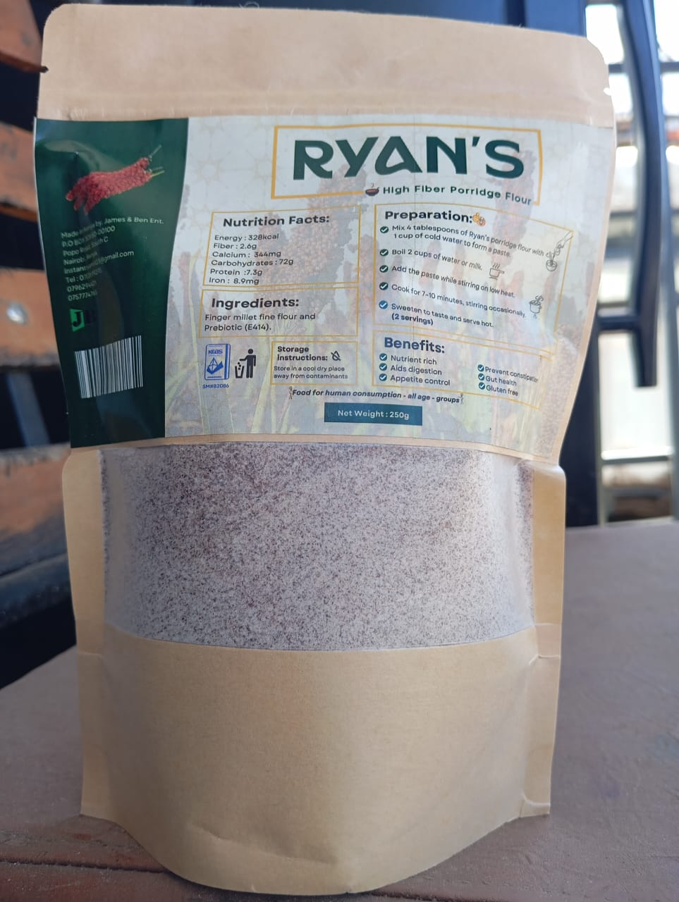
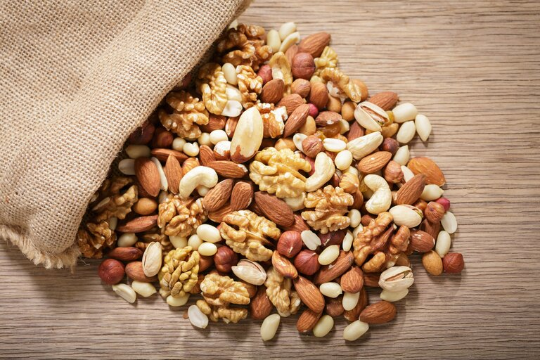

Main Recipes

Ryan's Instant Porridge Recipe
- Add 4 tablespoons of flour to a cup or bowl.
- Slowly add cold water until a smooth paste forms.
- Gradually pour in hot water or milk while stirring until desired thickness is reached.
- Add your favorite sweetener or flavor.
- Your porridge is ready to enjoy!

Ryan's High Fibre Porridge Recipe (2 servings)
- Mix 4 tablespoons of porridge flour with 1 cup of cold water to form a paste.
- Boil 2 cups of water or milk.
- Add the paste while stirring on low heat.
- Cook for 7–10 minutes, stirring occasionally.
- Sweeten to taste and serve hot.
Flavour Variations

Lemorific (Lemon Twist)
- Prepare your base porridge recipe.
- Add 1 teaspoon of lemon zest and 1 tablespoon of fresh lemon juice.
- Mix in a drizzle of honey.
- Garnish with mint leaves and serve warm.

Coconutrific (Creamy Coconut)
- Prepare your base porridge recipe.
- Stir in 1/4 cup of coconut milk and 2 tablespoons of shredded coconut.
- Add a dash of vanilla extract and a pinch of salt.
- Top with toasted coconut flakes.
Banarific (Banana Bliss)
- Mash one ripe banana and mix into your prepared porridge.
- Add a pinch of cinnamon and a drizzle of maple syrup or honey.
- Top with banana slices and chopped walnuts.

Chocorific (Cocoa Delight)
- Prepare your base porridge recipe.
- Mix in 1 tablespoon of cocoa powder and a handful of chocolate chips.
- Add a small pinch of salt.
- Stir well and serve with whipped cream if desired.

Return Home
Nutrific (Nutty Boost)
- Prepare your base porridge recipe.
- Fold in 2 tablespoons each of chopped nuts and seeds.
- Add a handful of dried fruits (raisins or cranberries).
- Mix thoroughly and serve.